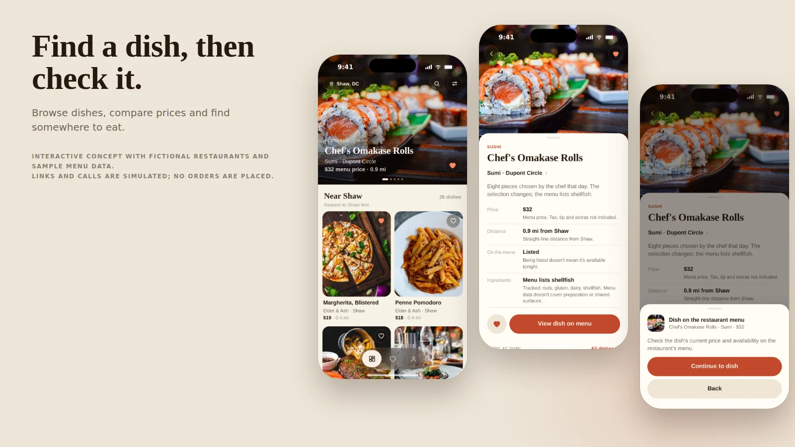
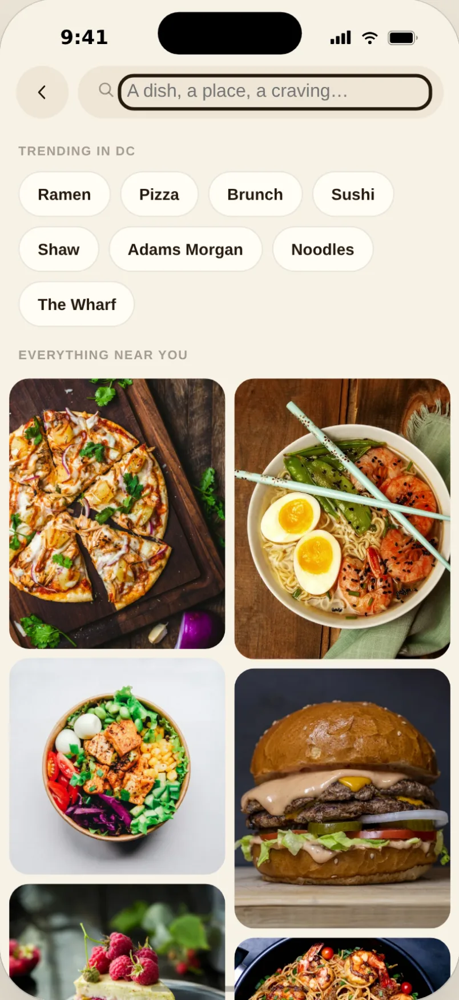

Morsel — find a dish, then check it
A food-discovery app for browsing dishes, comparing prices and finding somewhere to eat.
The ideaBrowse by photo, compare a few dishes, and save the ones you want to try.
The redesignI added details to the cards, kept search filters in place, and simplified the step from a dish to its restaurant menu.
About this case: I revisited the earlier prototype in September 2026. The changes came from reviewing the design and walking through the app, not from user research. Prices, ingredients, links and dates are sample data.

TRY THE PROTOTYPEV3.2 BUILD · ILLUSTRATIVE DATA
Try it: find something near Shaw for under $15, save another option, then continue to the restaurant menu.
MORSEL V3.2 · FULL FLOW
OPEN FULL PROTOTYPE ↗

FICTIONAL RESTAURANTS · SIMULATED LINKS · NO ORDERS PLACED
Interactive concept with fictional restaurants and sample menu data. Links and calls are simulated; no orders are placed. You can also open the prototype in its own window using the link above.
CHOOSING DINNER
TOOK TOO MANY TAPS
The first feed gave the food plenty of room, but left out the details needed to choose between dishes. You had to open each one to see its name and price. Switching to search also lost the budget and distance you had already set.
I focused the revision on a simple task: find a dish, compare it with another, and decide where to eat. I wanted to keep the appeal of browsing food photos while making those practical checks easier. Whether this would be useful enough to replace someone’s usual search is still an open question.
COMPARE DISHES
WITHOUT OPENING EACH ONE
I added the dish name, restaurant, neighborhood, price and distance below each photo. The same layout appears in search and saves, so you can compare dishes wherever you find them. It takes more space than the old grid, but you no longer need to open a dish just to check its price.
On the dish page, I moved price, distance and ingredient information above the menu button. I also removed the sample reviews and repeat-order score: there were no real orders behind them. Price filters now show dollar amounts, and distance is shown in miles rather than estimated walk times.
PICK UP WHERE
YOU LEFT OFF
Opening search used to reset the context from the feed. I changed it to keep the selected area, price range and distance. Returning from a dish now brings back the query and scroll position, with keyboard focus on the card you opened.

When there are no results, the app explains why: the dish is missing from the catalog, outside the browsing filters, or excluded by dietary settings. You can change the relevant setting without starting over. Clearing price and distance filters keeps dietary settings in place.
RETHINKING
THE ORDER BUTTON
Retrospective design review. This section revisits the earlier order flow and sample score. These changes have not been tested with participants.
The old order screen let someone acknowledge an allergy warning and continue. That checkbox did not resolve the ingredient conflict, so I removed it. The revised screen points to other dishes and the restaurant menu. I also removed the repeat-order percentage because Morsel has no connection to actual order records.
Missing ingredient information now has its own state. With an allergy setting active, those dishes appear separately from matches. Dishes with a listed conflict are excluded from recommendations, but remain visible in saves and restaurant menus with a warning. The same checks apply throughout the app.
I replaced “Order” with labels such as “View restaurant menu” and “Check with restaurant.” The next screen asks you to check current prices and availability on the restaurant’s menu, then continues. In this prototype that is where the flow ends.
KEEP WHAT
YOU SAVED
Changing a dietary setting should not make a saved dish disappear. Saved cards now show ingredient conflicts, missing information and dishes removed from the menu. I also fixed “Recent” to use the date a dish was saved. Older saves stay available, with a note when their date is missing.
KEYBOARD AND
READABILITY CHECKS
I added descriptive names to dish cards and kept Save as a separate button. The menu dialog supports Tab and Escape, and returns focus to its opener when closed. Status labels use text and symbols as well as color. The enlarged-text example below checks the layout; a full screen-reader, contrast and touch review is still needed.
WHAT I FOUND
DURING REVIEW
Design review · September 2026. These issues came from inspecting the source and walking through the prototype.
- Search lost filters and the query. Both now stay in place when opening a dish and returning to results.
- Missing ingredient data looked like no conflict. I added a separate unknown state and two sample dishes to check it.
- Related dishes ignored dietary settings. They now use the same checks as the feed.
- The restaurant button selected the first dish automatically. It now opens the restaurant menu.
- “Recent” followed catalog order. New saves now sort by the time they were saved.
- Hours, delivery estimates and scores were invented. I removed those displays and the claims attached to them.
- A missing city could break the feed. The prototype now starts in Shaw, DC.
The review checked that these interactions work. It did not establish whether people choose food more easily, understand the ingredient notices, or would use Morsel instead of their usual apps.
DESIGN NOTES
AND TEST PLAN
These documents explain the current flow, alternatives and component rules. They were written retrospectively and include a plan for future research. Earlier designs are labeled for comparison.
WHAT I WANT
TO LEARN NEXT
I would start by asking five or six people how they chose a recent meal, including what they checked and which apps they used. Then I would try the prototype with tasks like these:
- “You want dinner soon near the demo area. Pick something you would consider, keeping the menu price within $20.”
- “You’re in the mood for noodles. Find an option, look at another, then go back.”
- “You can’t decide yet. Keep two options somewhere you can find later.”
- “Now you’re ready to get one of them. Show me what you would do next.”
I would also ask people who manage food allergies what they understand from the ingredient notices and what they would still check with a restaurant. Missing information must not read as confirmation that a dish is suitable.
The photos drew me into the first version, but the details needed more attention. This revision makes it easier to compare what is on screen. The next step is to find out whether that helps someone choose a meal.
FocusComparing dishes and finding a restaurant menu
CompletedDesign review and prototype revision
NextInterviews and usability testing